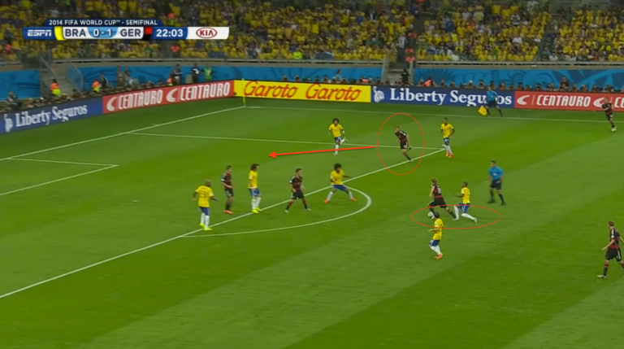
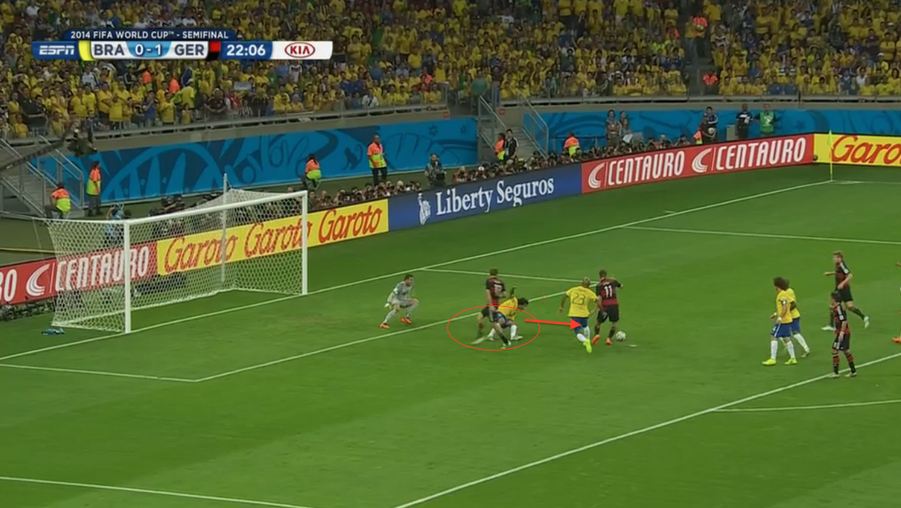

In the universe of sports and history coverage, there is no shortage of outlets that tells (and shows) what has happened.
Far less in supply are those that explain how and why it happened.
Even fewer are those that give meaning to the event as well as how it might apply to our daily lives.
There are similarities between sports and history. It is possible to enjoy both as participants and as spectators.
That is why Spencer enjoyed and excelled in both. Because he was a student and a participant (in the case of football and other sports)
Both involve strategy and tactical implementation or execution.
The sport, a modern day warfare, is repeated each fall and on each Saturday two regional foes are able to claim victory, for a day, and for a season.
The immediacy of outcome, the sense of participation, and the consequence of defeat has been transported from a battlefield to a playing field.
No better guide than Spencer, for either a tour of historical sites or as commentator of sports events.
In many ways, he was better than the internet offerings or even Chat GPT.
Because he would tailor his narrative to fit the audience – of one.
In this era of confusion and division, our own Warring States (Ideas) Period, Spencer provided a clear, logical, calming narrative.
A quote from a Chinese military general, strategist, philosopher, and writer who lived during the Eastern Zhou period (771 to 256 BC). 1
“If you know the enemy and know yourself, you need not fear the result of a hundred battles. If you know yourself but not the enemy, for every victory gained you will also suffer a defeat. If you know neither the enemy nor yourself, you will succumb in every battle.”
― Sun Tzu, The Art of War
Thank you for researching, participating and enlightening our lives with your writing.
Here are some entries from a blog about sports.
Welcome to the Shot Clock Blog, where we give quick sports analysis in under 24 seconds!
My brother Steven and I started this blog to write down our thoughts and observations of all major professional sports: NBA, NFL, NHL, MLB and major college sports (basketball and football).
We’re always game for advice, tips and especially comments and questions. If you have something that you’ve wondered about, comment and send it our way so we can do the legwork FOR YOU!
We hope you enjoy the Shot Clock Blog!
Soccer Analysis
Goal 2: Miroslav Klose
Jokes about him being “the Kloser” abounds, but he finishes the best within 8 yards of the goal. Now, he has 16 goals to lead all World Cup scorers and passed Brazil’s Ronaldo. His goal came off of a turnover in Brazil’s defensive half, where Kroos salvaged a poor pass and saw Muller racing across the front of the goal.  One pinpoint pass later, the defenders and goalkeeper Julio Cesar crash on Muller, but Muller drops the pass to the feet of Klose.
 Klose shoots, Cesar makes the first save but leaves a juicy rebound for Klose to finish. 2-0 Germany. Congrats on your 16th goal, Klose!
5 NCAA Quarterbacks: August 2015 Entry
- Taysom Hill, BYU
He is a dark horse for the Heisman trophy, according to some, but he is just as dangerous as Tim Tebow was at Florida. Before a season-ending and gruesome injury at Utah State, Hill wowed college football fans and scouts with his running style and numbers (although many project him as a running back-type player in the NFL if he chooses to play/is drafted:
I mean, he did run rampant in the 2013 game against Texas and even hurdled a defender on a touchdown run last year:
He’s coming back from tearing his knee, so no one is too sure if he’ll be the same. But, BYU’s independent schedule is intriguing and if they do well, it’ll be because of Taysom Hill. Everyone loves an underdog (see: Boise State).
Footnotes
https://www.wikiwand.com/en/Sun_Tzu↩︎